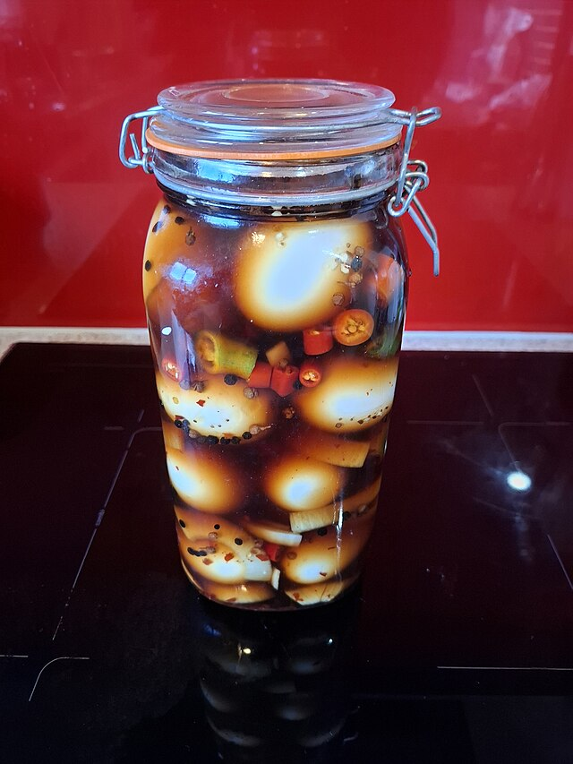

Tea Eggs

Image by TarnishedPath under CC BY-SA 4.0
Description
This is a recipe for Tea Eggs, which I have simplified a a little from the original. It's a very longwinded process so I recommend making a big batch and saving this whole project for special occasions. The picture above is of pickled eggs technically, so the final dish will not look exactly like that.
Ingredients
- As many eggs as you wish to make
- Enough water to cover the eggs
- 2tsps of sugar
- 2tsps of salt
- 2 star star anise
- 1 stick of cinnamon
- Plenty of soy sauce
- 4 cloves of garlic
- 1tblsp of cayenne powder
Steps
- Boil the eggs for five minutes in just the water
- Remove them and use a spoon to gently crack their shell all around, without removing the shell
- Add the rest of the ingredients, bring back to a boil, and add the eggs
- Boil for 20 minutes, then let it cool for 20 minutes
- Simmer for 1 hour
- Let cool for 1 hour
- Place in the fridge over night
- Next morning, you can remove the eggs from the brew if you'd like. The eggs are now ready
Home